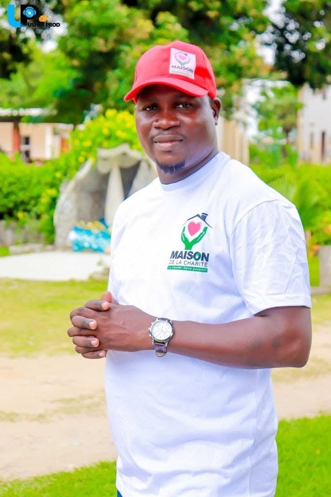

Depuis 2021, Charity's House porte une mission simple : rendre le sourire à ceux qui en ont le plus besoin.
Tout commence en 2021, lorsqu'un petit groupe d'amis décide de répondre à l'urgence sociale dans leur quartier.
Quelques colis alimentaires, beaucoup d'écoute, et une conviction : personne ne devrait être laissé seul face à la précarité.
Aujourd'hui, Charity's House c'est plus de 50 bénévoles, des programmes structurés et des milliers de vies touchées chaque année.

Un monde où chaque personne, quelle que soit sa situation, peut accéder à la dignité, à l'espoir et à un avenir.
Mobiliser les ressources humaines et matérielles pour soutenir concrètement les plus vulnérables.
Ce qui nous guide chaque jour
